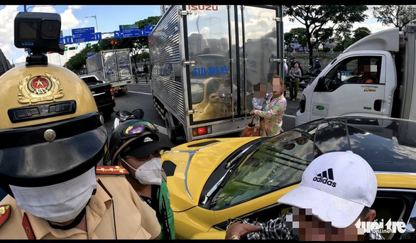

Báo tuổi trẻ thủ đô
Tài xế xe hơi tông ngã xe cảnh sát giao thông ở quận 5: 'Con bệnh, hoảng loạn nên chạy gấp'
TTO - Liên quan vụ xe hơi tông ngã xe cảnh sát trên đường Trần Hưng Đạo (quận 5) rồi bỏ chạy, cảnh sát giao thông đã làm việc với tài xế ngay sau khi dừng được xe. Người này trình bày do con bị bệnh, đang đến bệnh viện gấp, tinh thần hoảng loạn...

Nam tài xế cùng người phụ nữ và con nhỏ làm việc với CSGT ngay sau đó - Ảnh: PC08
Tối 28-11, đại diện Phòng cảnh sát giao thông đường bộ - đường sắt (PC08) Công an TP.HCM cho biết liên quan vụ việc mạng xã hội lan truyền đoạn video ghi lại cảnh xe hơi tông ngã xe đặc chủng của cảnh sát giao thông (CSGT) rồi bỏ chạy, xảy ra trưa cùng ngày.
Về vụ việc này, Phòng PC08 thông tin, vào lúc 12h40 tại giao lộ Nguyễn Tri Phương - Nguyễn Trãi (quận 5), tổ tuần tra của Đội CSGT Chợ Lớn thuộc Phòng PC08 phát hiện xe hơi biển số 60K-049.20 chạy trên đường Nguyễn Tri Phương, hướng từ cầu Nguyễn Tri Phương về vòng xoay Nguyễn Tri Phương, có hành vi quẹo phải vào đường Nguyễn Trãi khi đèn đỏ.
Xe này tiếp tục chạy đến giao lộ Trần Hưng Đạo - Huỳnh Mẫn Đạt (quận 5), tổ công tác ra hiệu lệnh dừng xe, chặn được và yêu cầu tài xế xuống để giải quyết vụ việc. Tuy nhiên, tài xế đã tông ngã xe đặc chủng của CSGT rồi bỏ chạy.
Khi CSGT đuổi đến giao lộ Võ Văn Kiệt - Trần Đình Xu (quận 1), tổ công tác đã dừng được xe này.
Sau đó, tài xế cùng một người phụ nữ và một em bé bước xuống trình bày lý do con bị bệnh, đang trên đường đến bệnh viện nên chạy gấp, tinh thần hoảng loạn nên đã có hành vi vi phạm trên.
Qua kiểm tra giấy tờ, được biết tài xế tên Lý Quang D. (37 tuổi, ngụ tỉnh Đồng Nai). Sau khi làm việc với tổ công tác, ông D. nhận thức rõ hành vi vi phạm của mình. Ông D. cũng không có nồng độ cồn và ma túy trong người.
Tổ công tác đã lập biên bản vi phạm hành chính đối với ông D. về các hành vi "không chấp hành hiệu lệnh của đèn tín hiệu giao thông" và "không chấp hành hiệu lệnh của người điều khiển giao thông".

Xác minh video xe hơi tông ngã xe CSGT ở quận 5 rồi tháo chạy
TTO - Theo hình ảnh từ video, hai chiến sĩ CSGT dừng xe đặc chủng trước đầu xe hơi màu vàng. Sau đó, người lái xe hơi tông ngã xe đặc chủng của CSGT rồi bỏ chạy hướng về quận 1, xe của CSGT ngã đè lên một xe máy khác của người dân trên đường.
6 phút trước